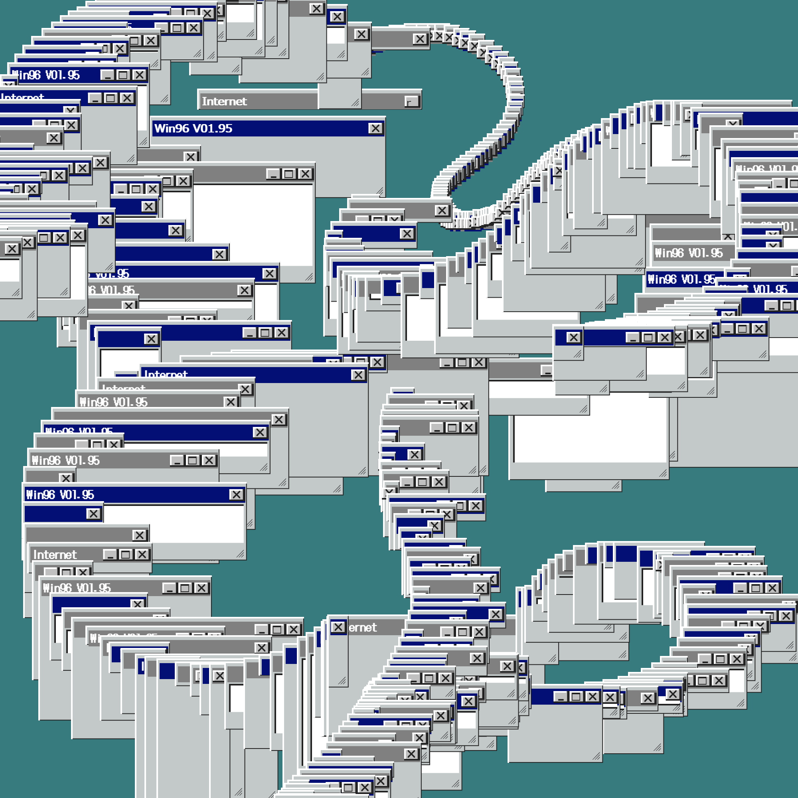

ポートフォリオ
はじめまして、木葉はづくと申します。VTuber、邦楽を中心にMVPV制作を行っています。
2次元的な演出を通して、pixel単位でのエフェクトを模索しています。最近はASCII-ARTを映像化してみたり、p5.jsを使った非ジェネレティブな映像を試しています。
MV制作
本業としてMV制作を行っています。作風は文字のアニメーションを中心に、音楽を主体に据えて制作しています。
DAZBEE - hikari
文字のパーツを星座や恒星に見立てて演出しています。具体的には、漢字とひらがなにわけカウントし、メシエカタログとして映像内に表記したり、文字をつつむような枠を生成して星図のようにしています。
a9ualia - 水浴
p5.jsやblenderなどで、ボロノイ図やフラクタルなどの有名なアルゴリズムをつかって、水生微生物を表現しました。
主な制作
作風や映像の傾向ごとの主な制作です。方向性の参考になれば幸いです。
そのほか
作品集に作品をまとめております。
クリエイティブコーディング
個人制作やクライアント制作の補助として、クリエイティブコーディングを積極的に使用しています。p5.jsをメインに使用しています。
あくまでもジェネレティブではなく静的な映像表現の一環として扱うことで、新しい表現になり得ないか試しています。

左：アスキーアートを動画として作ってみる自主制作「ASCII GIF」シリーズの一つ。
右：Windowsのウィンドウをブラシのようにマウスで描くことができる作品。映像用の素材の制作に用いた。
補助の例
DTM鯖合作 - おくすり飲んで寝よう
1次元セル・オートマトンとノイズをかけ合わせアニメーションさせたコード。AEでポストエフェクトを行った。
a9ualia - 水浴
群れの動きを再現するBoidsアルゴリズムを使ったアニメーション。基本的な動きを作った後AEでカラーや質感を調整。
そのほか
クリエイティブコーディングまとめに作品をまとめております。
デザイン
タイポグラフィ
映像制作や趣味制作の中で文字組をすることがあります。
左：架空バーチャルファッションブランド「Amorphous」のタイトルデザイン。
右：クラゲをモチーフにしたキャラクター「Chep」のロゴ。
下：依頼制作のロゴデザイン。約物「」、。を使った明朝表現。
言語、文字デザイン
発音体系の段階から言語を制作しています。全ての単語が名詞として扱われる共時的な状態の表現に特化した言語で、文字は線同士の交差する点の位置とベクトルで示されます。
これを使うことで新しい歌詞の表現や、意味のあるグラフィックスの制作が可能になります。
左：例文。基礎文法が自然言語の翻訳に支障をきたさないかの確認。
右：文法書の例。回帰表現の項目の一部。